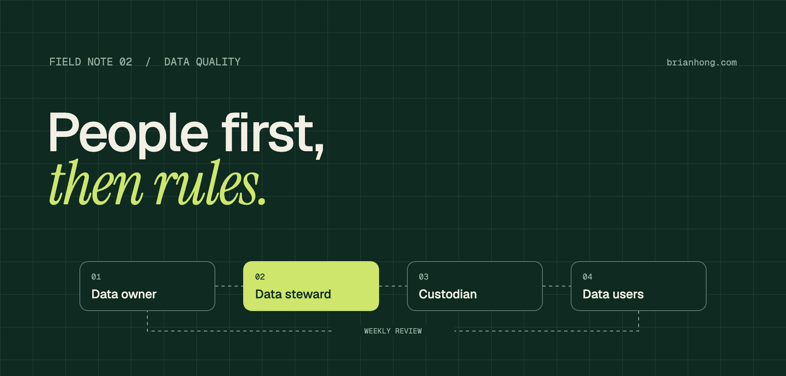

Salesforce data stewardship is a people problem first
Validation rules catch typos. They don’t fix the reason reps skip fields. Clear owners, fewer fields, and a weekly habit do.

When a field is empty on 60% of records, the first instinct is to make it required. Reps then type a period, pick the first picklist value, and move on. The field is now full and still useless. You’ve traded a visible problem for an invisible one.
Bad CRM data is almost never a technology failure. It comes from unclear ownership, fields nobody explained, and processes that ask people to enter information before they have it. Tools only help once the people side is fixed. Stewardship is how you fix it.
Data stewardship in Salesforce is the day-to-day work of keeping CRM records accurate, complete, and usable. It means a named owner for each critical field, a shared definition of what the field means, and a regular review.
Data governance vs. data stewardship
The two words get used interchangeably, but they do different jobs. Governance is the rulebook: what data you keep, who can see it, how long you keep it. Stewardship is the daily practice that keeps the rulebook true in real records.
- Data owner A business leader, like the VP of Sales for Opportunity, who decides what a field means and what "good" looks like. Accountable, not hands-on.
- Data steward Someone close to the work, often a sales ops analyst or senior rep, who monitors quality each week, resolves duplicates, and flags when definitions drift.
- Data custodian The admin or architect who implements the rules: validation, duplicate rules, picklists, field-level security, and integration mappings.
- Data users Everyone entering and reading records. They need to know why a field matters, not just that it’s required.
In a small org, one admin often covers steward and custodian. That’s fine up to about 25 users on a single cloud. Past that, or once you run two or more clouds, stewardship needs someone on the business side. Otherwise the admin becomes the person who gets blamed for data they don’t own.
Ask why the field is empty
Before touching a validation rule, sit with two reps for twenty minutes each. Watch them update a real opportunity. Usually the empty field comes down to one of four reasons:
- They don’t know yet The value isn’t available at that stage. Asking for Close Reason at creation guarantees junk. Move the requirement to the stage where the answer exists.
- They don’t know why Nobody explained that Competitor feeds the win-loss report leadership reviews every quarter. Add help text and say it in the next team meeting.
- They can’t find it The field sits at the bottom of a 90-field layout. Use Dynamic Forms to show it only when it’s relevant.
- It isn’t worth it Entering it costs them time and nobody ever uses it. Be honest about this one. Sometimes the right move is deleting the field.
“A required field nobody understands is just a faster way to collect bad data.”
Define your critical data elements
You can’t steward 400 fields. Pick the 15 to 20 that drive forecasting, routing, commissions, and board reporting. Those are your critical data elements. Everything else gets a lighter touch.
For each one, write a short definition card and keep it where people actually look: the field description, the help text, and a single shared data dictionary.
| Field | Meaning | Owner | Steward | Required at | Feeds |
|---|---|---|---|---|---|
| Opportunity.Amount | Annual contract value, excl. services | VP Sales | Sales Ops | Stage 3 | Forecast, commissions |
The "Required at" column is the one most orgs skip, and it’s the one that fixes the most. Tying requirements to stages or statuses, instead of record creation, removes most garbage entries overnight.
Design the Salesforce org so good data is the easy path
Once you understand the behavior, then use the platform to make the right entry faster than the wrong one.
- Picklists over text Use restricted picklists and global value sets for anything you report on. Free text is where definitions go to die.
- Stage-gated rules Validation rules that fire at the stage where the data exists, with an error message that says why the field matters.
- Auto-fill what you can Derive values with Flow or formulas rather than asking people to type them: region from address, segment from employee count.
- Duplicate management Matching and duplicate rules on Lead, Contact, and Account, set to alert at first and block only once match quality is proven.
- Guard the front door Web-to-lead forms, list imports, and integrations cause most bad data at scale. Apply rules as far upstream as possible, and give every integration a named owner.
- Fewer fields Audit field usage twice a year. Anything under 5% fill with no report or automation dependency is a candidate for removal.
Build the weekly stewardship habit
Stewardship lives or dies on cadence. A quarterly cleanup project feels productive, but the data is bad again six weeks later. A thirty-minute weekly habit holds up.
- Weekly Steward reviews a data quality dashboard: fill rates on critical fields, new duplicates, stale open opportunities. Fixes or routes each issue to the record owner.
- Monthly Owners review trend lines with the steward. Definitions get updated where the business has changed.
- Quarterly Field usage audit, duplicate rule tuning, and a review of who can edit and export critical data.
- At every release Any new field that feeds a report ships with an owner, a definition card, and a place on the dashboard.
Make data quality visible, not punitive
Public data quality leaderboards shame people, and shamed people game metrics. What works better is putting a quality indicator on the record and the manager’s dashboard. Then data becomes part of the normal pipeline conversation, not a separate compliance exercise.
The strongest lever is showing reps what they get back. When clean data powers accurate territory routing, lead scoring, or an Agentforce summary that saves them ten minutes before a call, they start caring about the fields without being told to. If an agent is on your roadmap, getting Salesforce data ready for AI starts with the same fields.
What to measure for data quality
- Completeness Fill rate on each critical field, measured only at the stage where it’s required.
- Accuracy A monthly spot-check of 20 random records against the source: contract, email, or call notes.
- Duplicates Duplicate rate on Accounts and Contacts, plus how long flagged duplicates wait before merging.
- Freshness Share of open opportunities updated in the last 14 days, and contacts with bounced emails.
- Trust Ask leadership once a quarter: do you trust the pipeline number? It’s subjective, and it’s the one that matters most.
A 60-day data stewardship plan
- Days 1–20 Interview reps, pick the critical data elements, and name an owner and steward for each. Baseline fill and duplicate rates.
- Days 21–40 Write the definition cards, move requirements to the right stages, and clean up layouts. Turn on duplicate rules in alert mode.
- Days 41–60 Launch the weekly steward review and the manager dashboard. Retire the first batch of unused fields and show leadership the trend.
Validation rules still have a place. Add them after the process makes sense, not instead of it. Good data comes from people who understand what it’s for. The platform just makes that easier to keep up.
Frequently asked questions
What is data stewardship in Salesforce?
Data stewardship in Salesforce is the day-to-day work of keeping CRM records accurate, complete, and usable. It means a named owner for each critical field, a shared definition of what the field means, and a regular review.
What is the difference between data governance and data stewardship?
Governance is the rulebook: what data you keep, who can see it, and how long you keep it. Stewardship is the daily practice that keeps those rules true in real records.
What is the difference between a data owner and a data steward?
A data owner is a business leader who decides what a field means and what good looks like. A data steward is someone close to the work who monitors quality each week, resolves duplicates, and flags when definitions drift.
Should I make a field required to improve data quality?
Usually not as a first step. Reps fill a required field they don’t understand with junk, so find out why it’s empty first, then require it at the stage where the answer exists.